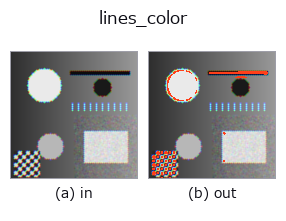

contour op• 資料種類:color → contour
• 呼叫:fullseye.apply(img, "lines_color", a=0.5, b=0.5)(2-D 的模型是一張圖 + 兩個純量旋鈕 a,b∈[0,1])
• HALCON 對應:lines_color(其含義與參數可參考 HALCON 手冊)

*圖為在 128×128 合成輸入上實際執行的輸出。左為輸入，右為輸出。點雲以俯視散點顯示(亮度 = z)，一維序列為折線，體資料為沿 z 的最大值投影，影片為中間影格，複數影像為振幅；無法成像的回傳值直接顯示數值。*
掃描旋鈕 a(0.1 / 0.5 / 0.9，另一旋鈕取預設):
▸ lines_color: knob a sweep (docs site)
掃描旋鈕 b(0.1 / 0.5 / 0.9，另一旋鈕取預設):
▸ lines_color: knob b sweep (docs site)
階段(前置運算子 → 本運算子，由左至右):
▸ lines_color: stages (docs site)
換別的影像(合成場景 / 照片 / 硬幣。上排為輸入，下排為對應輸出。旋鈕取預設):
▸ lines_color: other inputs (docs site)
偵測彩色影像中的線（脊線）。號稱相當於 HALCON 的 `lines_color`（偵測彩色線及其寬度），但不估計線寬——只是將亮度影像上的高斯拉普拉斯響應以閾值二值化，並將連通元件作為輪廓回傳，沒有相當於 HALCON 回傳值中線寬的輸出。
> 以下的詳細說明為原文 —— 摘要與標題已翻譯。
`_rgb_to_gray で輝度化した後、scipy.ndimage.gaussian_laplace` を
シグマ `0.5 + 2.5 * a` でかけて絶対値を最大値正規化し、
`0.2 + 0.4 * b` でしきい値二値化して 8 連結ラベリングする。
a はリッジの太さ（LoG のスケール）、b は検出しきい値を振る。
3 画素未満の成分は捨てる。
• gallery2d_contour_measure 族使用指南
• 範例資料目錄(下載 URL / 授權) —— 2-D 用 skimage.data(BSD/公有領域)加合成圖,3-D 給出真實資料源(Stanford/PDS 等)的下載 URL。
• 運算子來歷與參考文獻 —— 該運算子族所依據的研究/方法出處。
• 演算法的正典(作者・年份)與用途見上面的族使用指南。
下面的程式已確認可以執行(與圖相同的輸入)。在 Studio 說明中，此區塊會變成按鈕，可當場載入並執行。
cfa_to_rgb 0.50 0.50 lines_color 0.50 0.50
▸ Load this pipeline · Load & run
• gallery2d_contour_measure — py -3.11 examples/gallery2d_contour_measure.py
contour 作為輸入)identity · select_contours · smooth_contours · fit_line_contours · contours_to_region · count_contours · total_length · select_contours_xld
contour)select_contours · smooth_contours · fit_line_contours · contours_to_region · sk_find_contours · edges_sub_pix · lines_gauss · select_contours_xld
*Provenance: ops.py — 2D 運算子登記表。本條目由 tools/opdocs.py md 自動產生(請勿手動編輯)。*
© 2026 Kazufumi Furuse — Fullseye operator documentation. Licensed under Apache-2.0.
{kind=link}
{kind=link}
{kind=link}
{kind=link}